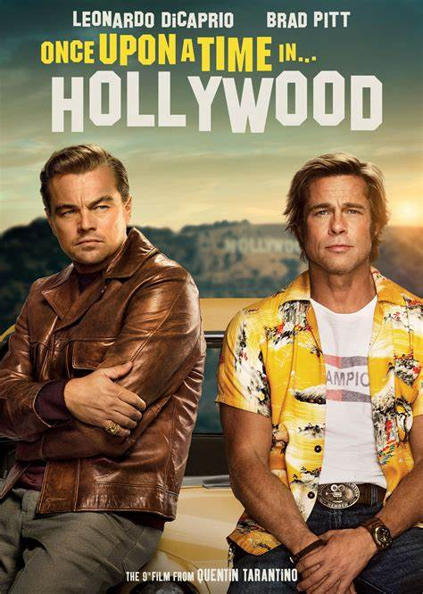

Movie 4
Once Upon a Time in hollywood
Rating: 7.6/10
Synopsis
The film begins with a clip from the old Western TV series "Bounty Law" featuring action star Rick Dalton as Jake Cahill. Rick is a fan of Rick's work and is a has-been due to his ongoing alcoholism. Rick and his stuntman, Cliff Booth, meet producer Marvin Schwarz, who suggests Rick shoot Spaghetti Westerns in Rome. Rick is resentful of this and decides to work with director Roman Polanski to reinvigorate his career. Cliff rehearses his lines for "Lancer" and meets Sharon Tate, a rising starlet. They have a party at the Playboy Mansion, where Charles Manson visits and apologizes for an error. Cliff brings Rick to the set of "Lancer" for the shoot, where he meets Bruce Lee, who challenges Cliff to a fight. Lee gets Cliff down first, but Lee retaliates by slamming him into a car. Janet, Randy's wife and fellow stunt coordinator, is pissed to see Cliff and Lee fighting, leading to his firing. Sharon drives through Hollywood, visiting bookstores and movie theaters to see her film "The Wrecking Crew." She is invited to the box office and receives a ticket. Rick, a method actor, works on "Lancer" with his co-star Trudi. They discuss their readings and Rick struggles with his perceived decline in stardom. Cliff, a blind actor, visits the Spahn Ranch with Rick, where they encounter hippies and a woman who denies taking advantage of him. Cliff confronts a male hippie who stabs him in the face, but is praised by both the director and Trudi. Rick improvises his villain character and throws Trudi off, receiving praise from both the director and Trudi. Six months later, Rick and Cliff fly to Rome to shoot Spaghetti Western films. Rick meets the director, Manson, and they discuss their careers. The film ends with Rick and Cliff reunited six months later, six months after their initial meeting.